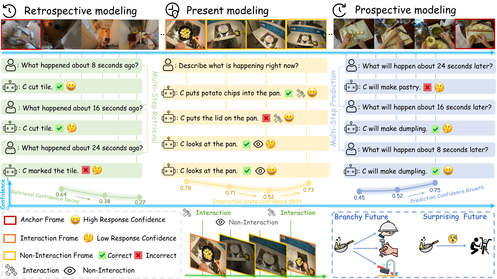
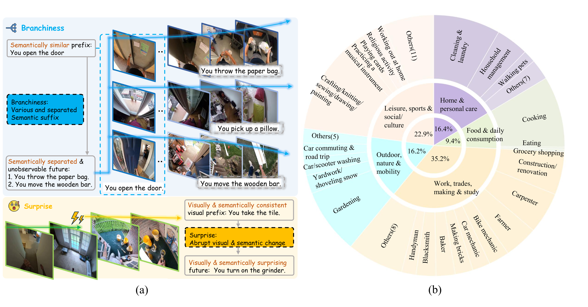
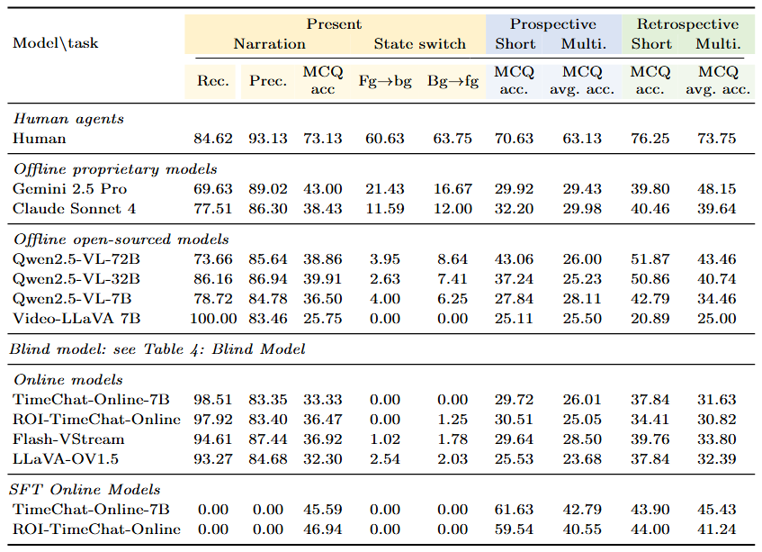

EgoSAT: A Comprehensive Benchmark of Egocentric Streaming Interaction Understanding
```A benchmark for evaluating retrospective, present, and prospective reasoning in egocentric streaming video understanding.
EgoSAT is accepted to ECCV 2026.

Introduction
Recent advances in wearable cameras, edge computing, and vision-language models are enabling AI assistants that can continuously observe the world from a first-person perspective and respond to users in natural language. However, existing benchmarks usually evaluate video question answering, online narration, and activity anticipation as separate tasks, while real egocentric assistants must reason about past events, ongoing interactions, and plausible future outcomes within the same evolving video stream.
EgoSAT bridges this gap with a unified benchmark for egocentric streaming interaction understanding. Models must answer queries under a strict online constraint: only frames observed before the query time are available. Beyond answer accuracy, EgoSAT also evaluates interaction awareness, answerability, and confidence calibration under streaming uncertainty.
Three distinct reasoning modes
Present modeling
The model answers questions about the current observation and must recognize whether a visible human-object interaction is happening right now.
Prospective modeling
The model predicts future interactions from the observed visual prefix while judging whether the future is actually predictable from available evidence.
Retrospective modeling
The model answers questions about past events by retrieving the relevant moment from the observed streaming history.
Dataset
Dataset Statistics

Answerability-aware Construction
Branchiness. Branchiness measures uncertainty caused by multiple plausible and semantically diverse future continuations after the same observed interaction prefix.
Surprise. Surprise measures uncertainty caused by abrupt visual and semantic shifts between the recent observed context and the imminent future event.
Evaluation Pipeline
Data Preparation
EgoSAT releases annotations, MCQ candidates, effective querysets, and SFT manifests. Raw Ego4D videos are not redistributed. Users must obtain Ego4D access separately and set a local video root before running video inference.
EgoSAT-data/
```
egosat/
gt/
mcq_shuffled/
effective_querysets/
metadata/
sft/
EgoSAT-ROI-Cache/
roi_cache/
metadata/
Ego4D/
videos/Model Preparation
To evaluate a custom model, implement an EgoSAT model adapter that connects your model to the runner/helper pipeline. See the repository documentation for details.
Evaluation
The official scorer uses raw per-sample prediction JSON files and the released effective querysets. Normalized JSONL files are provided only for convenience and are not the official scoring source.
python evaluation/evaluate_main_table.py \
```
--pred-root /path/to/predictions
--gt-root /path/to/EgoSAT-data/egosat/gt
--mcq-root /path/to/EgoSAT-data/egosat/mcq_shuffled
--effective-queryset-root /path/to/EgoSAT-data/egosat/effective_querysetsExperimental Results
Performance of closed-source proprietary models, offline open-weight VLMs, and streaming VLMs on EgoSAT

Citation
If you find EgoSAT useful for your research, please cite:
@inproceedings{lei2026egosat,
```
title={EgoSAT: A Comprehensive Benchmark of Egocentric Streaming Interaction Understanding},
author={Lei, Yijia and Li, Jinzhao and Zhang, Yichi and Hua, Jiacheng and Li, Yin and Liu, Miao},
booktitle={European Conference on Computer Vision},
year={2026}
}License
The code is released under the MIT License. Raw Ego4D videos are not redistributed and are governed by the Ego4D license. Dataset usage terms will be provided with the Hugging Face release.